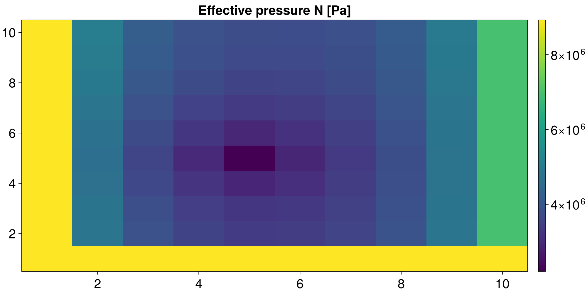

Coupling to Shakti.jl
This is an example of how to use the Shakti.jl subglacial hydrology solver (Sommers et al. 2018, https://gmd.copernicus.org/articles/11/2955/2018/) from within FastHydrology.jl, via the ShaktiHydroModel/TimeSimulation combination provided by the FastHydrologyShaktiExt package extension. Unlike KazmierczakHydroModel/HABHydroModel above, Shakti is a genuinely time-evolving solver with its own grid, state, and Picard-iteration solve for the hydraulic head at every timestep – FastHydrology just wraps it and delegates to it, rather than reimplementing any of its physics.
The extension activates automatically once both packages are loaded, so the only extra step compared to the other examples is using Shakti alongside using FastHydrology.
Note: FastHydrology and Shakti both export a function called run! (and step!) – unrelated generic functions that happen to share a name. Loading both packages makes the bare name ambiguous, so this example always calls FastHydrology.run!/FastHydrology.step! qualified.
using FastHydrology
using Shakti
using CairoMakieA minimal Shakti simulation
Shakti owns its own grid/state, independent of FastHydrology's AbstractHydroGrid/HydroState. Here we build a small, synthetic domain: a sloped bed, mixed grounded/ocean/land/other-basin boundary cells, and a single point-source moulin feeding meltwater in at one interior cell.
nx, ny = 10, 10
grid = Shakti.Grid(nx, ny, 1e4, 1e4)
state = Shakti.State(grid)
p = Shakti.ModelParameters(e_v = 0.0)
mi = Shakti.ConstantMeltInput()
sl = Shakti.RegularizedCoulombSlidingLaw(0.25)
mask = fill(Shakti.GROUNDED, nx, ny)
mask[end, :] .= Shakti.OCEAN
mask[1, :] .= Shakti.LAND
mask[:, 1] .= Shakti.OTHER_BASIN
A_visc = fill(5e-25, nx, ny)
zb = repeat(reshape(-0.02 .* grid.x, nx, 1), 1, ny) # sloped bed
zs = zb .+ 1000.0
b = fill(0.01, nx, ny) # initial gap height
G = fill(0.06, nx, ny) # geothermal heat flux
ub_x = fill(1e-6, nx + 1, ny)
ub_y = zeros(nx, ny + 1)
ieb = zeros(nx, ny)
ieb[5, 5] = 3 / (grid.dx * grid.dy) # a single moulin
taub_x = zeros(nx + 1, ny)
taub_y = zeros(nx, ny + 1)
Shakti.set_initial_conditions!(state, grid, p, mi, sl, mask, A_visc, zb, zs, b, G, ub_x, ub_y, ieb, taub_x, taub_y)Shakti.State{Matrix{Float64}}([0.0 0.0 … 0.0 0.0; -22.22222222222222 432.7732277777778 … 432.7732277777778 432.7732277777778; … ; -177.77777777777777 277.21767222222223 … 277.21767222222223 277.21767222222223; -200.0 0.0 … 0.0 0.0], [0.0 0.0 … 0.0 0.0; 0.0 4.4635053645e6 … 4.4635053645e6 4.4635053645e6; … ; 0.0 4.4635053645e6 … 4.4635053645e6 4.4635053645e6; 0.0 1.962e6 … 1.962e6 1.962e6], [8.9271e6 8.9271e6 … 8.9271e6 8.9271e6; 8.9271e6 8.927010729e6 … 8.927010729e6 8.927010729e6; … ; 8.9271e6 8.927010729e6 … 8.927010729e6 8.927010729e6; 8.9271e6 8.9271e6 … 8.9271e6 8.9271e6], [0.0 0.0 … 0.0 0.0; 0.0 0.01 … 0.01 0.01; … ; 0.0 0.01 … 0.01 0.01; 0.0 0.0 … 0.0 0.0], [0.025 0.025 … 0.025 0.025; 0.025 0.02 … 0.02 0.02; … ; 0.025 0.02 … 0.02 0.02; 0.025 0.025 … 0.025 0.025], [0.0 0.0 … 0.0 0.0; 0.0 5.0e-7 … 5.0e-7 5.0e-7; … ; 0.0 5.0e-7 … 5.0e-7 5.0e-7; 0.0 0.0 … 0.0 0.0], [1.7964071856287425e-7 7.745949606745093e-5 … 7.745949606745093e-5 7.745949606745093e-5; 1.7964071856287425e-7 8.039963919580065e-5 … 8.039963919580065e-5 8.039963919580065e-5; … ; 1.7964071856287425e-7 3.680716355903751e-5 … 3.680716355903751e-5 3.680716355903751e-5; 1.7964071856287425e-7 3.3867020430687774e-5 … 3.3867020430687774e-5 3.3867020430687774e-5], [0.0 0.0 … 0.0 0.0; 0.0 0.16604656968541545 … 0.16604656968541545 0.16604656968541545; … ; 0.0 0.16604656968541545 … 0.16604656968541545 0.16604656968541545; 0.0 0.0 … 0.0 0.0], [0.0 0.003943268350957077 … 0.003943268350957077 0.003943268350957077; 0.0 0.004026444827530309 … 0.004026444827530309 0.004026444827530309; … ; 0.0 0.0017011722575011826 … 0.0017011722575011826 0.0017011722575011826; 0.0 0.0016179957809279515 … 0.0016179957809279515 0.0016179957809279515], [0.0 -40.66979727128064 … -40.66979727128064 -40.66979727128064; 0.0 -40.66979727128064 … -40.66979727128064 -40.66979727128064; … ; 0.0 -14.600169943296962 … -14.600169943296962 -14.600169943296962; 0.0 -14.600169943296962 … -14.600169943296962 -14.600169943296962], [1000.0 1000.0 … 1000.0 1000.0; 1000.0 1000.0 … 1000.0 1000.0; … ; 1000.0 1000.0 … 1000.0 1000.0; 1000.0 1000.0 … 1000.0 1000.0], [0.0 0.0 … 0.0 0.0; 0.0 0.4158823828661546 … 0.4158823828661546 0.4158823828661546; … ; 0.0 0.4158823828661546 … 0.4158823828661546 0.4158823828661546; 0.0 0.0 … 0.0 0.0], [0.06 0.06 … 0.06 0.06; 0.06 0.06 … 0.06 0.06; … ; 0.06 0.06 … 0.06 0.06; 0.06 0.06 … 0.06 0.06], [-0.0 -0.0 … -0.0 -0.0; -22.22222222222222 -22.22222222222222 … -22.22222222222222 -22.22222222222222; … ; -177.77777777777777 -177.77777777777777 … -177.77777777777777 -177.77777777777777; -200.0 -200.0 … -200.0 -200.0], [1000.0 1000.0 … 1000.0 1000.0; 977.7777777777778 977.7777777777778 … 977.7777777777778 977.7777777777778; … ; 822.2222222222222 822.2222222222222 … 822.2222222222222 822.2222222222222; 800.0 800.0 … 800.0 800.0], [1000.0 1000.0 … 1000.0 1000.0; 1000.0 999.99 … 999.99 999.99; … ; 1000.0 999.99 … 999.99 999.99; 1000.0 1000.0 … 1000.0 1000.0], [0.0 0.0 … 0.0 0.0; 0.0 0.0 … 0.0 0.0; … ; 0.0 0.0 … 0.0 0.0; 0.0 0.0 … 0.0 0.0], [7.499999999999999e-25 7.499999999999999e-25 … 7.499999999999999e-25 7.499999999999999e-25; 7.499999999999999e-25 7.499999999999999e-25 … 7.499999999999999e-25 7.499999999999999e-25; … ; 7.499999999999999e-25 7.499999999999999e-25 … 7.499999999999999e-25 7.499999999999999e-25; 7.499999999999999e-25 7.499999999999999e-25 … 7.499999999999999e-25 7.499999999999999e-25], [5.0e-25 5.0e-25 … 5.0e-25 5.0e-25; 5.0e-25 5.0e-25 … 5.0e-25 5.0e-25; … ; 5.0e-25 5.0e-25 … 5.0e-25 5.0e-25; 5.0e-25 5.0e-25 … 5.0e-25 5.0e-25], [8.9271e6 8.9271e6 … 8.9271e6 8.9271e6; 8.9271e6 4.4635053645e6 … 4.4635053645e6 4.4635053645e6; … ; 8.9271e6 4.4635053645e6 … 4.4635053645e6 4.4635053645e6; 8.9271e6 6.9651e6 … 6.9651e6 6.9651e6], [3.0 2.0 … 2.0 2.0; 3.0 0.0 … 0.0 0.0; … ; 3.0 0.0 … 0.0 0.0; 3.0 1.0 … 1.0 1.0], [0.0 0.0 … 0.0 0.0; -0.0 0.38949590500000003 … 0.38949590500000003 0.38949590500000003; … ; -0.0 -0.24949590500000002 … -0.24949590500000002 -0.24949590500000002; 0.0 0.0 … 0.0 0.0], [-0.0 -0.0 … -0.0 -0.0; 0.0 -0.020248060636001177 … -0.020248060636001177 -0.020248060636001177; … ; 0.0 0.012970118935843468 … 0.012970118935843468 0.012970118935843468; -0.0 -0.0 … -0.0 -0.0], [1000.0 1000.0 … 1000.0 1000.0; 1000.0 1000.0 … 1000.0 1000.0; … ; 1000.0 1000.0 … 1000.0 1000.0; 1000.0 1000.0 … 1000.0 1000.0], [0.0 0.0 … 0.0 0.0; 0.0 0.005 … 0.005 0.005; … ; 0.0 0.005 … 0.005 0.005; 0.0 0.0 … 0.0 0.0], [0.0 0.0 … 0.0 0.0; 0.0 0.0 … 0.0 0.0; … ; 0.0 0.0 … 0.0 0.0; 0.0 0.0 … 0.0 0.0], [0.0 0.0 … 0.0 0.0; 0.0 0.0 … 0.0 0.0; … ; 0.0 0.0 … 0.0 0.0; 0.0 0.0 … 0.0 0.0], [0.0 0.0 … 0.0 0.0; 0.0 4017.15482805 … 4017.15482805 4017.15482805; … ; 0.0 -2251.3548280500004 … -2251.3548280500004 -2251.3548280500004; 0.0 0.0 … 0.0 0.0], [1.0 1.0 … 1.0 1.0; 0.0 1.0 … 1.0 1.0; … ; 0.0 1.0 … 1.0 1.0; 1.0 1.0 … 1.0 1.0], [0.0 0.0 … 0.0 0.0; 0.0 0.0 … 0.0 0.0; … ; 0.0 0.0 … 0.0 0.0; 0.0 0.0 … 0.0 0.0], [-0.0 -0.0 … -0.0 -0.0; -0.0 -0.0 … -0.0 -0.0; … ; -0.0 -0.0 … -0.0 -0.0; -0.0 -0.0 … -0.0 -0.0], [1000.0 1000.0 … 1000.0 1000.0; 1000.0 1000.0 … 1000.0 1000.0; … ; 1000.0 1000.0 … 1000.0 1000.0; 1000.0 1000.0 … 1000.0 1000.0], [0.0 0.0 … 0.0 0.0; 0.0 0.005 … 0.01 0.01; … ; 0.0 0.005 … 0.01 0.01; 0.0 0.0 … 0.0 0.0], [0.0 0.0 … 0.0 0.0; 0.0 0.0 … 0.0 0.0; … ; 0.0 0.0 … 0.0 0.0; 0.0 0.0 … 0.0 0.0], [0.0 0.0 … 0.0 0.0; 0.0 0.0 … 0.0 0.0; … ; 0.0 0.0 … 0.0 0.0; 0.0 0.0 … 0.0 0.0], [0.0 0.0 … 0.0 0.0; 0.0 0.0 … 0.0 0.0; … ; 0.0 0.0 … 0.0 0.0; 0.0 0.0 … 0.0 0.0], [1.0 0.0 … 1.0 1.0; 1.0 0.0 … 1.0 1.0; … ; 1.0 0.0 … 1.0 1.0; 1.0 0.0 … 1.0 1.0])A direct (Cholesky) solve backs the elliptic head scheme's Picard iteration.
ls = Shakti.CholeskyDirectSolver(grid)
ps = Shakti.PicardSolver(500, 1e-6, ls, grid)Shakti.PicardSolver{Float64, Shakti.CholeskyDirectSolver{SparseArrays.CHOLMOD.Factor{Float64, Int64}, Shakti.SparseAssembledLinearSystem{Float64}, Vector{Float64}}, Shakti.NoHeadRelaxation, Matrix{Float64}}(500, 1.0e-6, Shakti.CholeskyDirectSolver{SparseArrays.CHOLMOD.Factor{Float64, Int64}, Shakti.SparseAssembledLinearSystem{Float64}, Vector{Float64}}(Shakti.SparseAssembledLinearSystem{Float64}(sparse([1, 2, 11, 1, 2, 3, 12, 2, 3, 4 … 97, 98, 99, 89, 98, 99, 100, 90, 99, 100], [1, 1, 1, 2, 2, 2, 2, 3, 3, 3 … 98, 98, 98, 99, 99, 99, 99, 100, 100, 100], [1.0, 0.0, 0.0, 0.0, 1.0, 0.0, 0.0, 0.0, 1.0, 0.0 … 0.0, 1.0, 0.0, 0.0, 0.0, 1.0, 0.0, 0.0, 0.0, 1.0], 100, 100), [0.0, 0.0, 0.0, 0.0, 0.0, 0.0, 0.0, 0.0, 0.0, 0.0 … 0.0, 0.0, 0.0, 0.0, 0.0, 0.0, 0.0, 0.0, 0.0, 0.0], [1 40 … 376 424; 5 45 … 381 428; … ; 33 80 … 416 456; 37 85 … 421 460], [4 44 … 380 427; 8 49 … 385 431; … ; 36 84 … 420 459; 0 0 … 0 0], [0 0 … 0 0; 2 41 … 377 425; … ; 30 76 … 412 453; 34 81 … 417 457], [39 87 … 423 0; 43 91 … 426 0; … ; 78 126 … 454 0; 83 131 … 458 0], [0 3 … 330 378; 0 7 … 335 383; … ; 0 35 … 370 418; 0 38 … 374 422]), SparseArrays.CHOLMOD.Factor{Float64, Int64}
type: LLt
method: simplicial
maxnnz: 648
nnz: 648
success: true
, [0.0, 0.0, 0.0, 0.0, 0.0, 0.0, 0.0, 0.0, 0.0, 0.0 … 0.0, 0.0, 0.0, 0.0, 0.0, 0.0, 0.0, 0.0, 0.0, 0.0]), false, 0, Shakti.NoHeadRelaxation(), [0.0 0.0 … 0.0 0.0; 0.0 0.0 … 0.0 0.0; … ; 0.0 0.0 … 0.0 0.0; 0.0 0.0 … 0.0 0.0], [0.0 0.0 … 0.0 0.0; 0.0 0.0 … 0.0 0.0; … ; 0.0 0.0 … 0.0 0.0; 0.0 0.0 … 0.0 0.0], 1)Wrapping it as a ShaktiHydroModel
Shakti.Simulation bundles the grid, state, model parameters, and every scheme choice (head/gap/sliding-law/...) together – ShaktiHydroModel just wraps that as an AbstractHydroModel, and TimeSimulation wraps the model, exactly like SteadyStateSimulation wraps KazmierczakHydroModel/HABHydroModel above.
dt = 3600.0 # 1 hour
tsteps = 6
shakti_sim = Shakti.Simulation(grid, state, tsteps, dt, p, "implicit", String[], mi, sl; ps = ps)
model = ShaktiHydroModel(shakti_sim)
time_sim = TimeSimulation(model)TimeSimulation{ShaktiHydroModel{Shakti.Simulation{Float64, Shakti.ModelParameters{Float64, Int64, Int64, Float64}, Shakti.EllipticHeadScheme{Shakti.PicardSolver{Float64, Shakti.CholeskyDirectSolver{SparseArrays.CHOLMOD.Factor{Float64, Int64}, Shakti.SparseAssembledLinearSystem{Float64}, Vector{Float64}}, Shakti.NoHeadRelaxation, Matrix{Float64}}}, Shakti.ImplicitGapScheme, Shakti.WithSensibleHeat, Shakti.NoObserver, Shakti.Grid{Float64, Vector{Float64}}, Shakti.State{Matrix{Float64}}, Shakti.ConstantMeltInput, Shakti.Arithmetic, Shakti.RegularizedCoulombSlidingLaw{Float64}}}}(ShaktiHydroModel{Shakti.Simulation{Float64, Shakti.ModelParameters{Float64, Int64, Int64, Float64}, Shakti.EllipticHeadScheme{Shakti.PicardSolver{Float64, Shakti.CholeskyDirectSolver{SparseArrays.CHOLMOD.Factor{Float64, Int64}, Shakti.SparseAssembledLinearSystem{Float64}, Vector{Float64}}, Shakti.NoHeadRelaxation, Matrix{Float64}}}, Shakti.ImplicitGapScheme, Shakti.WithSensibleHeat, Shakti.NoObserver, Shakti.Grid{Float64, Vector{Float64}}, Shakti.State{Matrix{Float64}}, Shakti.ConstantMeltInput, Shakti.Arithmetic, Shakti.RegularizedCoulombSlidingLaw{Float64}}}(Shakti.Simulation{Float64, Shakti.ModelParameters{Float64, Int64, Int64, Float64}, Shakti.EllipticHeadScheme{Shakti.PicardSolver{Float64, Shakti.CholeskyDirectSolver{SparseArrays.CHOLMOD.Factor{Float64, Int64}, Shakti.SparseAssembledLinearSystem{Float64}, Vector{Float64}}, Shakti.NoHeadRelaxation, Matrix{Float64}}}, Shakti.ImplicitGapScheme, Shakti.WithSensibleHeat, Shakti.NoObserver, Shakti.Grid{Float64, Vector{Float64}}, Shakti.State{Matrix{Float64}}, Shakti.ConstantMeltInput, Shakti.Arithmetic, Shakti.RegularizedCoulombSlidingLaw{Float64}}(6, 3600.0, Shakti.ModelParameters{Float64, Int64, Int64, Float64}(1000.0, 910.0, 9.81, 1.787e-6, 3.0, 0.0001, 334000.0, 0.05, 2.0, 7.5e-8, 4220.0, 0.0, 0.0, 0.0, 3, 2, 0.3333333333333333), Shakti.EllipticHeadScheme{Shakti.PicardSolver{Float64, Shakti.CholeskyDirectSolver{SparseArrays.CHOLMOD.Factor{Float64, Int64}, Shakti.SparseAssembledLinearSystem{Float64}, Vector{Float64}}, Shakti.NoHeadRelaxation, Matrix{Float64}}}(Shakti.PicardSolver{Float64, Shakti.CholeskyDirectSolver{SparseArrays.CHOLMOD.Factor{Float64, Int64}, Shakti.SparseAssembledLinearSystem{Float64}, Vector{Float64}}, Shakti.NoHeadRelaxation, Matrix{Float64}}(500, 1.0e-6, Shakti.CholeskyDirectSolver{SparseArrays.CHOLMOD.Factor{Float64, Int64}, Shakti.SparseAssembledLinearSystem{Float64}, Vector{Float64}}(Shakti.SparseAssembledLinearSystem{Float64}(sparse([1, 2, 11, 1, 2, 3, 12, 2, 3, 4 … 97, 98, 99, 89, 98, 99, 100, 90, 99, 100], [1, 1, 1, 2, 2, 2, 2, 3, 3, 3 … 98, 98, 98, 99, 99, 99, 99, 100, 100, 100], [1.0, 0.0, 0.0, 0.0, 1.0, 0.0, 0.0, 0.0, 1.0, 0.0 … 0.0, 1.0, 0.0, 0.0, 0.0, 1.0, 0.0, 0.0, 0.0, 1.0], 100, 100), [0.0, 0.0, 0.0, 0.0, 0.0, 0.0, 0.0, 0.0, 0.0, 0.0 … 0.0, 0.0, 0.0, 0.0, 0.0, 0.0, 0.0, 0.0, 0.0, 0.0], [1 40 … 376 424; 5 45 … 381 428; … ; 33 80 … 416 456; 37 85 … 421 460], [4 44 … 380 427; 8 49 … 385 431; … ; 36 84 … 420 459; 0 0 … 0 0], [0 0 … 0 0; 2 41 … 377 425; … ; 30 76 … 412 453; 34 81 … 417 457], [39 87 … 423 0; 43 91 … 426 0; … ; 78 126 … 454 0; 83 131 … 458 0], [0 3 … 330 378; 0 7 … 335 383; … ; 0 35 … 370 418; 0 38 … 374 422]), SparseArrays.CHOLMOD.Factor{Float64, Int64}
type: LLt
method: simplicial
maxnnz: 648
nnz: 648
success: true
, [0.0, 0.0, 0.0, 0.0, 0.0, 0.0, 0.0, 0.0, 0.0, 0.0 … 0.0, 0.0, 0.0, 0.0, 0.0, 0.0, 0.0, 0.0, 0.0, 0.0]), false, 0, Shakti.NoHeadRelaxation(), [0.0 0.0 … 0.0 0.0; 0.0 0.0 … 0.0 0.0; … ; 0.0 0.0 … 0.0 0.0; 0.0 0.0 … 0.0 0.0], [0.0 0.0 … 0.0 0.0; 0.0 0.0 … 0.0 0.0; … ; 0.0 0.0 … 0.0 0.0; 0.0 0.0 … 0.0 0.0], 1)), Shakti.ImplicitGapScheme(), Shakti.WithSensibleHeat(), Shakti.NoObserver(), Shakti.Grid{Float64, Vector{Float64}}(10, 10, 10000.0, 10000.0, 1111.111111111111, 1111.111111111111, [0.0, 1111.111111111111, 2222.222222222222, 3333.3333333333335, 4444.444444444444, 5555.555555555556, 6666.666666666667, 7777.777777777777, 8888.888888888889, 10000.0], [0.0, 1111.111111111111, 2222.222222222222, 3333.3333333333335, 4444.444444444444, 5555.555555555556, 6666.666666666667, 7777.777777777777, 8888.888888888889, 10000.0], 1.2345679012345679e6, 1.2345679012345679e6), Shakti.State{Matrix{Float64}}([0.0 0.0 … 0.0 0.0; -22.22222222222222 432.7732277777778 … 432.7732277777778 432.7732277777778; … ; -177.77777777777777 277.21767222222223 … 277.21767222222223 277.21767222222223; -200.0 0.0 … 0.0 0.0], [0.0 0.0 … 0.0 0.0; 0.0 4.4635053645e6 … 4.4635053645e6 4.4635053645e6; … ; 0.0 4.4635053645e6 … 4.4635053645e6 4.4635053645e6; 0.0 1.962e6 … 1.962e6 1.962e6], [8.9271e6 8.9271e6 … 8.9271e6 8.9271e6; 8.9271e6 8.927010729e6 … 8.927010729e6 8.927010729e6; … ; 8.9271e6 8.927010729e6 … 8.927010729e6 8.927010729e6; 8.9271e6 8.9271e6 … 8.9271e6 8.9271e6], [0.0 0.0 … 0.0 0.0; 0.0 0.01 … 0.01 0.01; … ; 0.0 0.01 … 0.01 0.01; 0.0 0.0 … 0.0 0.0], [0.025 0.025 … 0.025 0.025; 0.025 0.02 … 0.02 0.02; … ; 0.025 0.02 … 0.02 0.02; 0.025 0.025 … 0.025 0.025], [0.0 0.0 … 0.0 0.0; 0.0 5.0e-7 … 5.0e-7 5.0e-7; … ; 0.0 5.0e-7 … 5.0e-7 5.0e-7; 0.0 0.0 … 0.0 0.0], [1.7964071856287425e-7 7.745949606745093e-5 … 7.745949606745093e-5 7.745949606745093e-5; 1.7964071856287425e-7 8.039963919580065e-5 … 8.039963919580065e-5 8.039963919580065e-5; … ; 1.7964071856287425e-7 3.680716355903751e-5 … 3.680716355903751e-5 3.680716355903751e-5; 1.7964071856287425e-7 3.3867020430687774e-5 … 3.3867020430687774e-5 3.3867020430687774e-5], [0.0 0.0 … 0.0 0.0; 0.0 0.16604656968541545 … 0.16604656968541545 0.16604656968541545; … ; 0.0 0.16604656968541545 … 0.16604656968541545 0.16604656968541545; 0.0 0.0 … 0.0 0.0], [0.0 0.003943268350957077 … 0.003943268350957077 0.003943268350957077; 0.0 0.004026444827530309 … 0.004026444827530309 0.004026444827530309; … ; 0.0 0.0017011722575011826 … 0.0017011722575011826 0.0017011722575011826; 0.0 0.0016179957809279515 … 0.0016179957809279515 0.0016179957809279515], [0.0 -40.66979727128064 … -40.66979727128064 -40.66979727128064; 0.0 -40.66979727128064 … -40.66979727128064 -40.66979727128064; … ; 0.0 -14.600169943296962 … -14.600169943296962 -14.600169943296962; 0.0 -14.600169943296962 … -14.600169943296962 -14.600169943296962], [1000.0 1000.0 … 1000.0 1000.0; 1000.0 1000.0 … 1000.0 1000.0; … ; 1000.0 1000.0 … 1000.0 1000.0; 1000.0 1000.0 … 1000.0 1000.0], [0.0 0.0 … 0.0 0.0; 0.0 0.4158823828661546 … 0.4158823828661546 0.4158823828661546; … ; 0.0 0.4158823828661546 … 0.4158823828661546 0.4158823828661546; 0.0 0.0 … 0.0 0.0], [0.06 0.06 … 0.06 0.06; 0.06 0.06 … 0.06 0.06; … ; 0.06 0.06 … 0.06 0.06; 0.06 0.06 … 0.06 0.06], [-0.0 -0.0 … -0.0 -0.0; -22.22222222222222 -22.22222222222222 … -22.22222222222222 -22.22222222222222; … ; -177.77777777777777 -177.77777777777777 … -177.77777777777777 -177.77777777777777; -200.0 -200.0 … -200.0 -200.0], [1000.0 1000.0 … 1000.0 1000.0; 977.7777777777778 977.7777777777778 … 977.7777777777778 977.7777777777778; … ; 822.2222222222222 822.2222222222222 … 822.2222222222222 822.2222222222222; 800.0 800.0 … 800.0 800.0], [1000.0 1000.0 … 1000.0 1000.0; 1000.0 999.99 … 999.99 999.99; … ; 1000.0 999.99 … 999.99 999.99; 1000.0 1000.0 … 1000.0 1000.0], [0.0 0.0 … 0.0 0.0; 0.0 0.0 … 0.0 0.0; … ; 0.0 0.0 … 0.0 0.0; 0.0 0.0 … 0.0 0.0], [7.499999999999999e-25 7.499999999999999e-25 … 7.499999999999999e-25 7.499999999999999e-25; 7.499999999999999e-25 7.499999999999999e-25 … 7.499999999999999e-25 7.499999999999999e-25; … ; 7.499999999999999e-25 7.499999999999999e-25 … 7.499999999999999e-25 7.499999999999999e-25; 7.499999999999999e-25 7.499999999999999e-25 … 7.499999999999999e-25 7.499999999999999e-25], [5.0e-25 5.0e-25 … 5.0e-25 5.0e-25; 5.0e-25 5.0e-25 … 5.0e-25 5.0e-25; … ; 5.0e-25 5.0e-25 … 5.0e-25 5.0e-25; 5.0e-25 5.0e-25 … 5.0e-25 5.0e-25], [8.9271e6 8.9271e6 … 8.9271e6 8.9271e6; 8.9271e6 4.4635053645e6 … 4.4635053645e6 4.4635053645e6; … ; 8.9271e6 4.4635053645e6 … 4.4635053645e6 4.4635053645e6; 8.9271e6 6.9651e6 … 6.9651e6 6.9651e6], [3.0 2.0 … 2.0 2.0; 3.0 0.0 … 0.0 0.0; … ; 3.0 0.0 … 0.0 0.0; 3.0 1.0 … 1.0 1.0], [0.0 0.0 … 0.0 0.0; -0.0 0.38949590500000003 … 0.38949590500000003 0.38949590500000003; … ; -0.0 -0.24949590500000002 … -0.24949590500000002 -0.24949590500000002; 0.0 0.0 … 0.0 0.0], [-0.0 -0.0 … -0.0 -0.0; 0.0 -0.020248060636001177 … -0.020248060636001177 -0.020248060636001177; … ; 0.0 0.012970118935843468 … 0.012970118935843468 0.012970118935843468; -0.0 -0.0 … -0.0 -0.0], [1000.0 1000.0 … 1000.0 1000.0; 1000.0 1000.0 … 1000.0 1000.0; … ; 1000.0 1000.0 … 1000.0 1000.0; 1000.0 1000.0 … 1000.0 1000.0], [0.0 0.0 … 0.0 0.0; 0.0 0.005 … 0.005 0.005; … ; 0.0 0.005 … 0.005 0.005; 0.0 0.0 … 0.0 0.0], [0.0 0.0 … 0.0 0.0; 0.0 0.0 … 0.0 0.0; … ; 0.0 0.0 … 0.0 0.0; 0.0 0.0 … 0.0 0.0], [0.0 0.0 … 0.0 0.0; 0.0 0.0 … 0.0 0.0; … ; 0.0 0.0 … 0.0 0.0; 0.0 0.0 … 0.0 0.0], [0.0 0.0 … 0.0 0.0; 0.0 4017.15482805 … 4017.15482805 4017.15482805; … ; 0.0 -2251.3548280500004 … -2251.3548280500004 -2251.3548280500004; 0.0 0.0 … 0.0 0.0], [1.0 1.0 … 1.0 1.0; 0.0 1.0 … 1.0 1.0; … ; 0.0 1.0 … 1.0 1.0; 1.0 1.0 … 1.0 1.0], [0.0 0.0 … 0.0 0.0; 0.0 0.0 … 0.0 0.0; … ; 0.0 0.0 … 0.0 0.0; 0.0 0.0 … 0.0 0.0], [-0.0 -0.0 … -0.0 -0.0; -0.0 -0.0 … -0.0 -0.0; … ; -0.0 -0.0 … -0.0 -0.0; -0.0 -0.0 … -0.0 -0.0], [1000.0 1000.0 … 1000.0 1000.0; 1000.0 1000.0 … 1000.0 1000.0; … ; 1000.0 1000.0 … 1000.0 1000.0; 1000.0 1000.0 … 1000.0 1000.0], [0.0 0.0 … 0.0 0.0; 0.0 0.005 … 0.01 0.01; … ; 0.0 0.005 … 0.01 0.01; 0.0 0.0 … 0.0 0.0], [0.0 0.0 … 0.0 0.0; 0.0 0.0 … 0.0 0.0; … ; 0.0 0.0 … 0.0 0.0; 0.0 0.0 … 0.0 0.0], [0.0 0.0 … 0.0 0.0; 0.0 0.0 … 0.0 0.0; … ; 0.0 0.0 … 0.0 0.0; 0.0 0.0 … 0.0 0.0], [0.0 0.0 … 0.0 0.0; 0.0 0.0 … 0.0 0.0; … ; 0.0 0.0 … 0.0 0.0; 0.0 0.0 … 0.0 0.0], [1.0 0.0 … 1.0 1.0; 1.0 0.0 … 1.0 1.0; … ; 1.0 0.0 … 1.0 1.0; 1.0 0.0 … 1.0 1.0]), Shakti.ConstantMeltInput(), Shakti.Arithmetic(), Shakti.RegularizedCoulombSlidingLaw{Float64}(0.25), false, Base.RefValue{Float64}(0.0))))Running the whole simulation
FastHydrology.run! delegates straight to Shakti.run!, which advances all tsteps timesteps – this is the same as calling Shakti.run!(shakti_sim) directly.
FastHydrology.run!(time_sim)
fig, ax, hm = heatmap(Array(shakti_sim.state.N); axis = (; title = "Effective pressure N [Pa]"))
Colorbar(fig[1, 2], hm)
fig